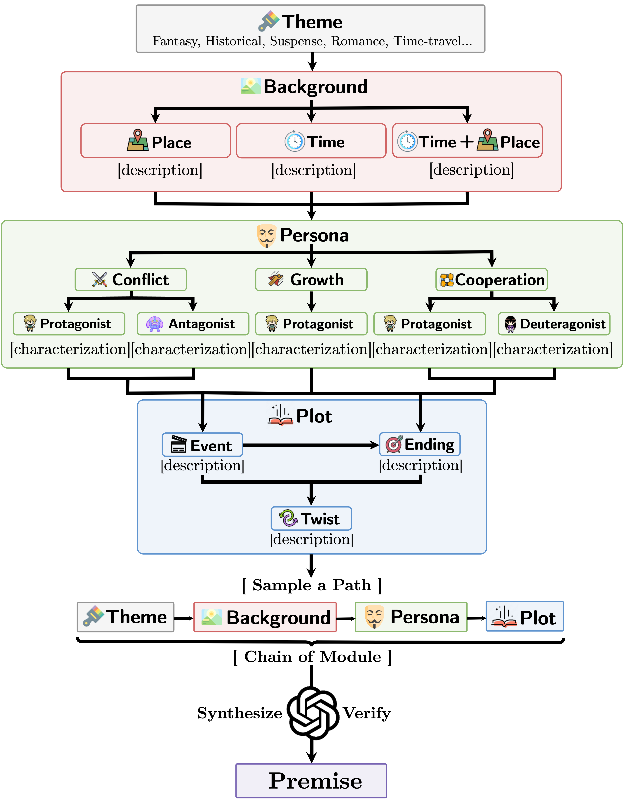
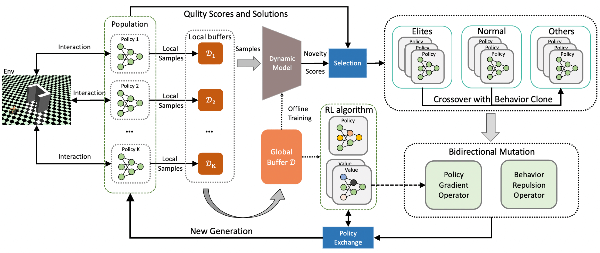
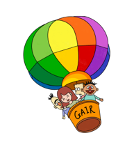

Yan Ma 马 琰
yanma23 [at] m [dot] fudan [dot] edu [dot] cn
Ph.D. Student
Department of Computer Science
Fudan University
I am a first-year Ph.D. student from the Department of Computer Science at Fudan University, advised by Prof. Pengfei Liu and Prof. Yu Qiao. Previously, I earned my master's degree from Fudan University in 2023, under the guidance of Prof. Wei Li. Prior to that, I was an undergraduate student of Computer Science at Dalian University of Technology from 2016 to 2020.
Resume / GitHub / Google Scholar / Zhihu
Research
I have a broad interest in Creating and Generating Virtual Content. Currently, my primary research interests lie in language model-driven storytelling, including:
- High-quality and Diverse Long Text-based Narratives
- Vision-Text Consistent Multi-modal Storytelling
- Video Storytelling / Physically-aware World Model
Additionally, influenced by my past research experiences, I am also intrigued by Decision-making based on Reinforcement Learning and Physics-based Character Animation.
Education
- 2023.09 - Now : Ph.D. student in Computer Science, Fudan University
- 2020.09 - 2023.06 : M.S. in Computer Application Technology, Fudan University
- 2016.09 - 2020.06 : B.Eng. in Computer Science, Dalian University of Technology
Publication
-
MoPS: Modular Story Premise Synthesis for Open-Ended Automatic Story Generation
Yan Ma, Yu Qiao, Pengfei Liu
Annual Meeting of the Association for Computational Linguistics (ACL), 2024 -
 Open-Ended Diverse Solution Discovery with Regulated Behavior Patterns for Cross-Domain Adaptation
Open-Ended Diverse Solution Discovery with Regulated Behavior Patterns for Cross-Domain Adaptation
Kang Xu, Yan Ma, Bingsheng Wei, Wei Li
Association for the Advancement of Artificial Intelligence (AAAI), 2023 -
Dynamics-aware novelty search with behavior repulsion
Kang Xu, Yan Ma, Wei Li
Genetic and Evolutionary Computation Conference (GECCO), 2022 -
 Evolutionary Action Selection for Gradient-Based Policy Learning
Evolutionary Action Selection for Gradient-Based Policy Learning
Yan Ma, Tianxing Liu, Bingsheng Wei, Yi Liu, Kang Xu, Wei Li
International Conference on Neural Information Processing (ICONIP), 2022 (Oral)
Project
-
Awesome-Story-Generation
An extensive list of awesome papers about Story Generation / Storytelling, primarily focusing on the era of Large Language Models (LLMs).
Contributor, mainly maintained by Yingpeng Ma. -
Dotfiles: Configuration files for Linux
My linux configuration dotfiles (including neovim/astronvim, tmux, bash, jupyter, etc).
I am a vimer (●'◡'●). -
 RL Plot: Reinforcement Learning Plot Library
RL Plot: Reinforcement Learning Plot Library
An easy to use and highly encapsulated RL plot library (including basic error bar lineplot and a wrapper to rliable).


Experience
-
-
Generative AI Research Lab - Ph.D. Member (May.2023 - Now)
Homepage -
Netease Games AI Laboratory - Research Intern (Jul.2022 - Sep.2022)
Advisor: Sijia Xu